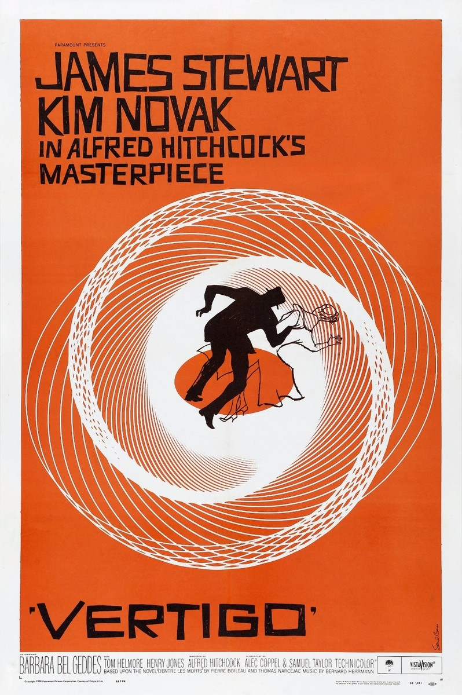

Vertigo (Vértigo)
Diseño del póster y la secuencia de títulos para la película de Alfred Hitchcock. Utiliza espirales hipnóticas para representar visualmente el vértigo y la obsesión del protagonista.
Diseño del póster y la secuencia de títulos para la película de Alfred Hitchcock. Utiliza espirales hipnóticas para representar visualmente el vértigo y la obsesión del protagonista.
El cartel para esta película de Otto Preminger rompió moldes. El brazo dentado y anguloso se convirtió en un símbolo icónico del tema controvertido de la película (la adicción a las drogas), demostrando que el diseño podía ser conceptual y provocador.
Rediseñé el logo de AT&T, creando el famoso globo terráqueo. Este diseño simple y global se mantuvo como uno de los logos más reconocibles del mundo durante décadas, mostrando su maestría en el branding corporativo.